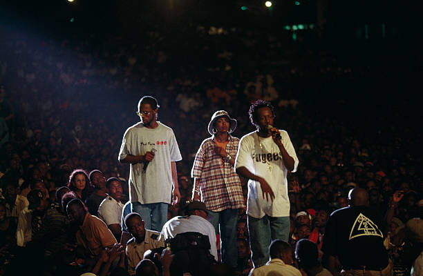
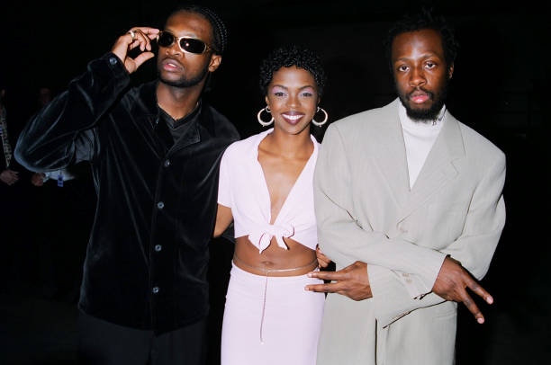

<div class="slideshow-container">
    <div class="slide">
        
      <!-- Slide content goes here -->
    </div>
    <div class="slide">
      <!-- Slide content goes here -->
      
    </div>
    <!-- Add more slide divs as needed -->
    <div class="slide">
        <!-- Slide content goes here -->
        
      </div>
      <div class="slide">
        <!-- Slide content goes here -->
        
      </div>
  </div>
  
  <div class="dot-container">
    <!-- Dots will be dynamically generated here -->
  </div>
<style>
    .slideshow-container {
  position: relative;
  width: 100%;
  height: 300px; /* Adjust the height as needed */
  overflow: hidden;
  margin-top: 50px;
}

.slide {
  position: absolute;
  width: 900%;
  height: 500%;
  opacity: 0;
  transition: opacity 1s ease;
  margin-top: 20px;
}

.show {
  opacity: 1;
}

.dot-container {
  text-align: center;
  margin-top: 50px;
 margin-right: -60px;
}

.dot {
  display: inline-block;
  width: 10px;
  height: 10px;
  border-radius: 50%;
  background-color: #bbb;
  margin: 0 5px;
  cursor: pointer;

}

.active-dot {
  background-color: #717171;
}

/* Add more slide styles as needed */

</style>  

<script>
    const slides = document.querySelectorAll('.slide');
const dotContainer = document.querySelector('.dot-container');
let currentSlide = 0;

// Function to show the current slide
function showSlide() {
  slides.forEach((slide) => {
    slide.classList.remove('show');
  });

  slides[currentSlide].classList.add('show');

  // Update the active dot
  const dots = document.querySelectorAll('.dot');
  dots.forEach((dot) => {
    dot.classList.remove('active-dot');
  });
  dots[currentSlide].classList.add('active-dot');
}

// Function to go to the next slide
function nextSlide() {
  currentSlide++;
  if (currentSlide === slides.length) {
    currentSlide = 0;
  }
  showSlide();
}

// Automatically go to the next slide every 3 seconds
setInterval(nextSlide, 3000);

// Generate navigation dots
slides.forEach((_, index) => {
  const dot = document.createElement('span');
  dot.classList.add('dot');
  dot.addEventListener('click', () => {
    currentSlide = index;
    showSlide();
  });
  dotContainer.appendChild(dot);
});

// Show the initial slide
showSlide();

</script>